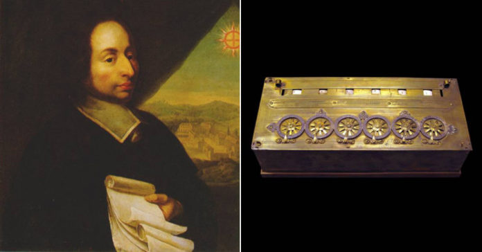
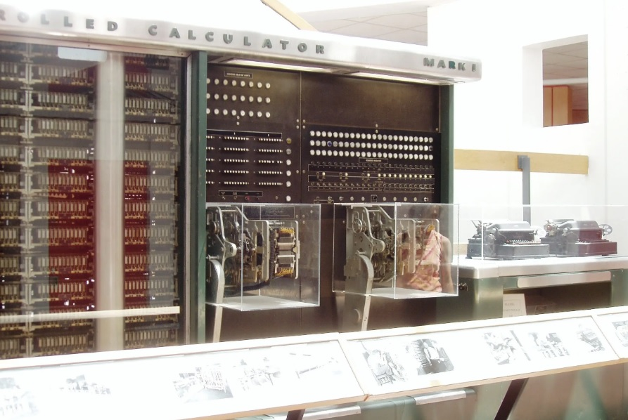

História da Informática
A informática teve seu início na história como uma precursora da revolução tecnológica, pois ela surgiu de uma dificuldade ou necessidade dentro da, quando um Francês denominado de Blaise Pascal, desenvolve a primeira máquina de calcular, a primeira calculadora, esta por sua vez foi desenvolvida para realizar cálculos de algoritmos. Isso tudo ocorreu na década de 1642 com a invenção da primeira calculadora de algoritmos, neste momento se dá o, ponta pé inicial para o desenvolvimento da informática no mundo.
Blaise Pascal
Blaise Pascal foi um cientista francês do século XVII que deixou grandes contribuições nas áreas da física e da matemática. Blaise Pascal nasceu no dia 19 de junho de 1623, em Clermont-Ferrand, na França. Era de uma família aristocrata, uma vez que seu pai, Étienne Pascal, era um magistrado e fazia parte da Noblesse de Robe, isto é, era um aristocrata com cargos vinculados ao Judiciário francês. Sua mãe, Antoinette Begon, faleceu quando ele ainda era uma criança de cinco anos. A união seus pais resultou no nascimento de três filhos, sendo Blaise o único do sexo masculino. Suas duas irmãs chamavam-se Jacqueline e Gilberte.
Computadores Mark - 1944
O MARK I era um computador, totalmente eletromecânico, construído em 1944 pelo professor Howard Aiken da Universidade de Harvard em Cambridge U.S.A., durante a 2ª guerra mundial. O MARK I foi construído na sequência da celebração, em 1939, de um contrato entre a Marinha dos Estados Unidos da América (US Navy ) e a Universidade de Harvard para construção de um calculador de tabelas para uso na navegação. A IBM financiava a construção do calculador em 2/3 e o restante era financiado pela Marinha dos Estados Unidos da América. O MARK I tinha cerca de 17 metros de comprimento por 2,5 metros de altura e uma massa de cerca de 5 toneladas. Quando em funcionamento, diz-se que reproduzia o ruído de uma grande sala cheia de velhinhas, todas tricotando ao mesmo tempo. A memória e os totalizadores compreendiam 3.000 engrenagens com 10 "dentes", 1.400 comutadores rotativos e tudo era ligado por cerca de 800 Km de condutores elétricos.

O Eniac (Electronic Numerical Integrator and Computer) foi desenvolvido pelo exército dos EUA e funcionava com uma espécie de calculadora gigante.Responda À primeira vista, pode parecer que os computadores sempre estiveram por aqui. Mas, e se eu te disser que o primeiro computador foi apresentado ao mundo há apenas 74 anos? Seu nome é Eniac e ele foi desenvolvido nos Estados Unidos. O Eniac, foi lançado em 1946. O nome é, na realidade, uma sigla para Electronic Numerical Integrator and Computer. Outra informação que talvez você não saiba é que o primeiro computador do mundo foi criado pelo exército norte-americano.

O Fogo Como A Primeira Tecnologia Do Mundo. Porém, para os povos antigos a criação do fogo e seu descobrimento, foi considerado um fator totalmente tecnológico e que revolucionou toda uma era.
Por isso, separamos para você as 10 maiores inovações tecnológicas de todos os tempos e as que ainda prometem nos surpreender no futuro.